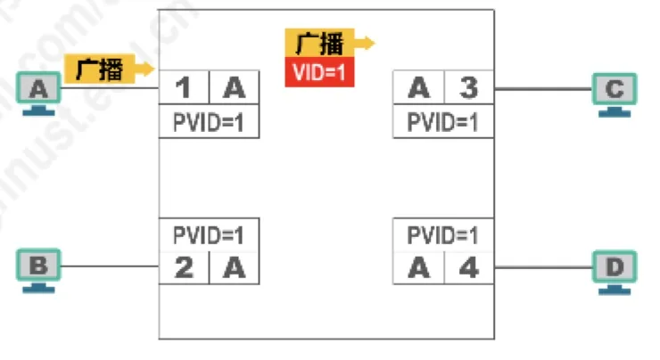
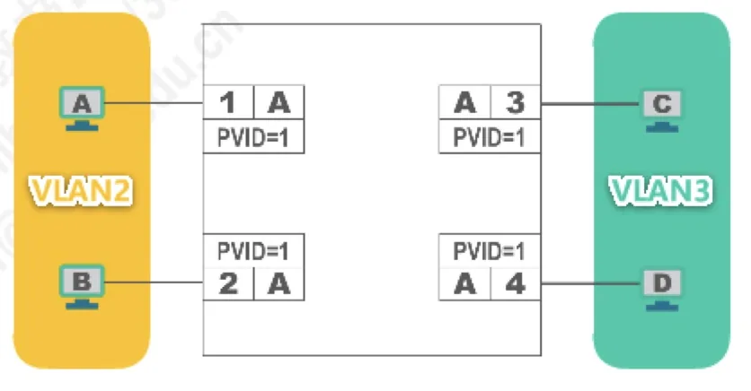
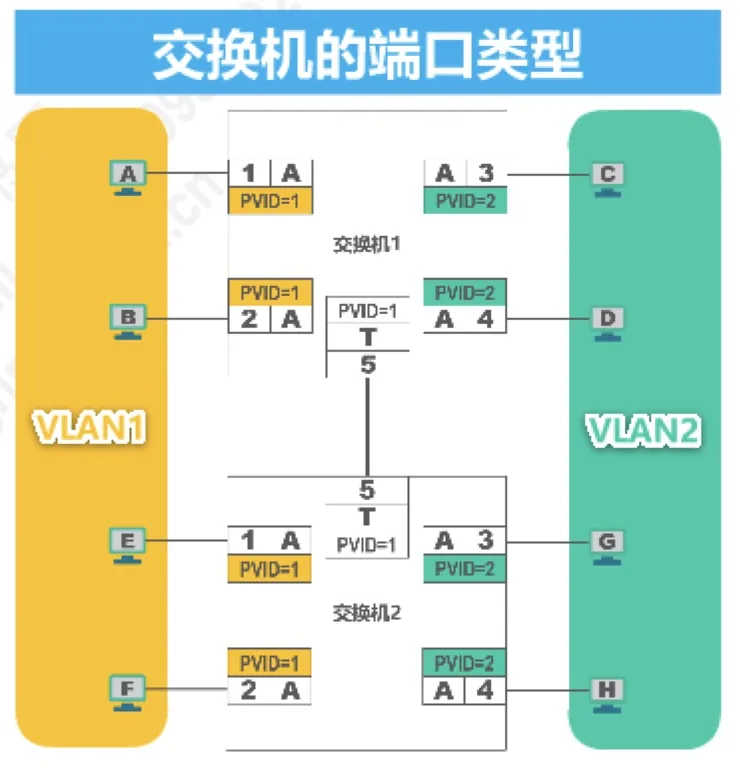
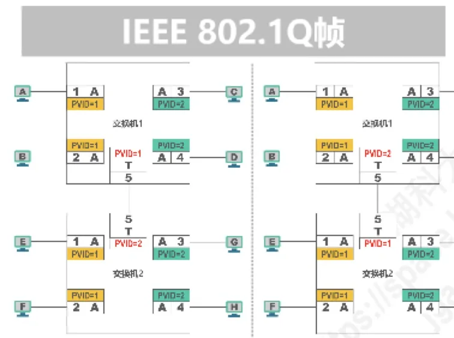
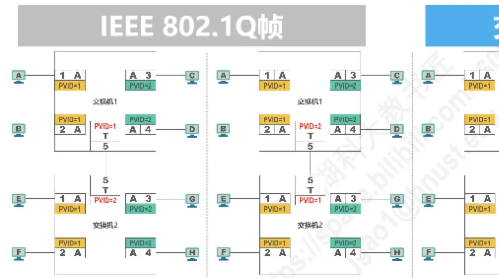
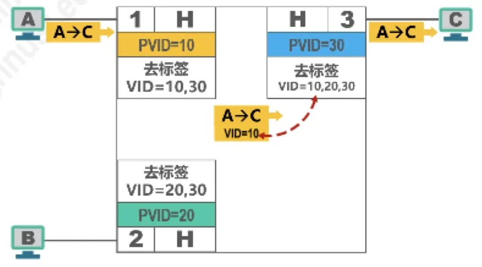

计算机通信与网络 · 第 3 章 数据链路层
3.11.2 虚拟局域网VLAN的实现机制
上一节说明了 VLAN 能做什么，本节回答它是怎么做到的。核心只有两件事：一是给以太网帧加一个 4 字节的 VLAN 标记（IEEE 802.1Q 帧），二是让交换机的端口按不同类型（Access、Trunk、Hybrid）决定什么时候打标签、什么时候去标签、哪些帧该转发。掌握「打标签—去标签」这条主线，三种端口的行为就都能推出来。
1. IEEE 802.1Q 帧
IEEE 802.1Q 帧（也称 Dot One Q 帧）对以太网的 MAC 帧格式进行了扩展，插入了 4 字节的 VLAN 标记。对比下面两张表可以看清这 4 字节插在哪里：
| 字段（自左至右） | 长度 |
|---|---|
| 目的 MAC 地址 | 6 字节 |
| 源 MAC 地址 | 6 字节 |
| 类型 | 2 字节 |
| 数据载荷 | 46~1500 字节 |
| FCS | 4 字节 |
| 字段（自左至右） | 长度 |
|---|---|
| 目的 MAC 地址 | 6 字节 |
| 源 MAC 地址 | 6 字节 |
| VLAN 标记 | 4 字节 |
| 类型 | 2 字节 |
| 数据载荷 | 46~1500 字节 |
| FCS | 4 字节 |
VLAN 标记插在源 MAC 地址与类型字段之间，因此帧的最大长度由 1518 字节增加到 1522 字节。
VLAN 标记的最后 12 比特称为 VLAN 标识符 VID，它唯一地标志了以太网帧属于哪一个 VLAN。VID 的取值范围是 0~4095（即 0 ~ 212−1）；其中 0 和 4095 都不用来表示 VLAN，因此用于表示 VLAN 的 VID 有效取值范围是 1~4094。
有两点需要特别注意：
- 802.1Q 帧是由交换机来处理的，而不是用户主机来处理的。普通主机发出和收到的仍是普通的以太网帧。
- 当交换机收到普通的以太网帧时，会将其插入 4 字节的 VLAN 标记转变为 802.1Q 帧，简称「打标签」；当交换机转发 802.1Q 帧时，可能会删除其 4 字节 VLAN 标记转变为普通以太网帧，简称「去标签」。
2. 交换机的端口类型
打标签与去标签的时机由端口类型决定。以太网交换机的端口有三种类型：Access、Trunk、Hybrid。
在此之前还要了解一个共同概念：交换机各端口都有缺省 VLAN ID。在思科交换机上称为 Native VLAN，即本征 VLAN；在华为交换机上称为 Port VLAN ID，即端口 VLAN ID，简记为 PVID。后文统一使用 PVID。
（1）Access 端口
Access 端口是最常见的一种，特点是：
- 一般用于连接用户计算机；
- 只能属于一个 VLAN；
- 端口的 PVID 值与端口所属 VLAN 的 ID 相同（默认为 1）。
它的处理规则如下：
- 接收处理：一般只接受「未打标签」的普通以太网 MAC 帧，并根据接收帧端口的 PVID 给帧「打标签」，即插入 4 字节 VLAN 标记字段，字段中的 VID 取值与端口的 PVID 取值相等；
- 发送处理：若帧中的 VID 与端口的 PVID 相等，则「去标签」并转发该帧；否则不转发。
用一句话概括：从用户主机进来的帧一定是「干净」的，交换机替它贴上本端口的标签；发给用户主机的帧必须是「干净」的，交换机在出口把标签撕掉。主机始终感知不到 VLAN 的存在。

若把不同端口划入不同的 VLAN，各端口的 PVID 也随之不同：例如连接 VLAN2 主机的端口 PVID=2、连接 VLAN3 主机的端口 PVID=3，而仍属 VLAN1 的端口 PVID=1。这样从端口进来的帧被打上各自的标签后，就只会在本 VLAN 内转发。

（2）Trunk 端口
Trunk 端口用于把 VLAN 延伸到另一台交换机或路由器：
- 一般用于交换机之间或交换机与路由器之间的互连；
- 可以属于多个 VLAN，一条链路上同时承载多个 VLAN 的帧；
- 用户可以设置 Trunk 端口的 PVID 值，默认情况下 Trunk 端口的 PVID 值为 1。
处理规则是：
- 接收处理：接收「未打标签」的帧，根据接收帧端口的 PVID 给帧「打标签」（插入 4 字节 VLAN 标记字段，字段中的 VID 取值与端口的 PVID 取值相等）；同时接收「已打标签的帧」；
- 发送处理：对 VID 等于 PVID 的帧，「去标签」再转发；对 VID 不等于 PVID 的帧，直接转发（保留标签）。
也就是说，Trunk 链路上传输的帧大多带着标签，只有与 PVID 相同的那个 VLAN 例外——它在链路上以「不打标签」的形式传输，这正是「本征 VLAN」的含义。

下面这个例子专门考察 Trunk 端口的 PVID 取值带来的影响。图中两台交换机用 Trunk 端口互连，两端 PVID 的组合不同，问：(1) 主机 A 发送广播帧，帧的传递过程是什么？(2) 主机 C 发送广播帧，帧的传递过程是什么？(3) 从上述过程可以得出什么结论？


结论是：互连的 Trunk 端口的 PVID 值不等，可能会造成转发错误——本该留在某个 VLAN 内的广播帧可能被打了错误的标签，从而被转发给别的 VLAN 里的主机（例如 A 的广播被错误地转发给 G、H，或 C 的广播被错误地转发给 E、F）。因此，用 Trunk 端口互连时，两侧的 PVID 应当保持一致。
（3）Hybrid 端口
Hybrid 端口兼有两者的能力：
- 既可用于交换机之间或交换机与路由器之间的互连（同 Trunk 端口），也可用于交换机与用户计算机之间的互连（同 Access 端口）；
- 可以属于多个 VLAN（同 Trunk 端口）；
- 用户可以设置 PVID 值，默认情况下为 1（同 Trunk 端口）。
处理规则是：
- 接收处理（同 Trunk 端口）：接收「未打标签」的帧，根据接收帧端口的 PVID 给帧「打标签」；同时接收「已打标签的帧」；
- 发送处理（与 Trunk 端口不同）：查看帧的 VID 是否在端口配置的「去标签」列表中——若存在，则「去标签」后再转发；若不存在，则直接转发（带标签）。
正是这个可自定义的「去标签列表」让 Hybrid 端口有了 Trunk 做不到的灵活性。看一个应用举例：主机 A、B、C 连接在同一个交换机的不同接口上，要求利用 Hybrid 端口的功能实现「A 和 B 都能与 C 相互通信，但 A 与 B 不能相互通信」。三个端口的配置是：
- 连接 A 的端口：PVID=10，去标签列表为 VID=10、30；
- 连接 B 的端口：PVID=20，去标签列表为 VID=20、30；
- 连接 C 的端口：PVID=30，去标签列表为 VID=10、20、30。
于是：A 发出的帧在 A 端口被打上 VID=10 的标签，转发到 C 端口时，10 在去标签列表中，去标签后交给 C；B 发出的帧打上 VID=20，同样能在 C 端口去标签后交给 C。而 A 发给 B 的帧带着 VID=10 到达 B 端口时，10 不在 B 端口的去标签列表（20、30）中，交换机就直接带标签转发出去，而普通主机无法识别 802.1Q 帧，因此 A 与 B 之间无法通信——需求得到满足。

3. 三种端口类型对照
把三种端口的行为整理在一起，便于比较和记忆：
| 端口类型 | 配置 | 收发处理 |
|---|---|---|
| Access | 连接用户计算机；只能属于一个 VLAN；PVID 与端口所属 VLAN 的 ID 相同（默认为 1） | 接收：一般只收未打标签的普通以太网帧，并按端口 PVID 打标签；发送：帧中 VID 等于端口 PVID 则去标签转发，否则不转发 |
| Trunk | 交换机之间或交换机与路由器之间的连接；可以属于多个 VLAN；PVID 可设置，默认为 1 | 接收：接收已打标签的帧，收到未打标签的帧时按端口 PVID 打标签；发送：VID 等于端口 PVID 去标签转发，VID 不等于端口 PVID 则直接转发 |
| Hybrid | 交换机之间、交换机与路由器、交换机与用户计算机之间的连接；可以属于多个 VLAN；PVID 可设置，默认为 1 | 接收：同 Trunk 端口；发送：查看 VID 是否在端口「去标签」列表中，存在则去标签再转发，不存在则直接转发 |
本节小结
- IEEE 802.1Q 帧（Dot One Q 帧）在源 MAC 地址与类型字段之间插入 4 字节的 VLAN 标记，帧最大长度从 1518 字节变为 1522 字节；标记的最后 12 比特是 VID，取值范围 0~4095，其中 0 与 4095 不表示 VLAN，有效范围是 1~4094；
- 802.1Q 帧由交换机处理而不由用户主机处理：收普通帧时插入标记叫「打标签」，转发 802.1Q 帧时删除标记叫「去标签」；
- 交换机端口分 Access、Trunk、Hybrid 三类；各端口有缺省 VLAN ID，思科称 Native VLAN（本征 VLAN），华为称 PVID；
- Access 端口连接用户计算机、只属于一个 VLAN、PVID 等于所属 VLAN 的 ID：收到未打标签的帧按 PVID 打标签，发送时 VID 等于 PVID 才去标签转发；
- Trunk 端口用于交换机之间或交换机与路由器之间，可属于多个 VLAN，默认 PVID 为 1：接收已打标签的帧或给未打标签的帧按 PVID 打标签，发送时 VID 等于 PVID 去标签转发、不等于则直接转发；互连的 Trunk 端口 PVID 值不等可能造成转发错误，应保持一致；
- Hybrid 端口兼具两者用途，属于多个 VLAN，其发送处理最灵活：看帧的 VID 是否在端口「去标签」列表中，存在则去标签后转发，不存在则直接转发——借此可以实现「A、B 都能与 C 通信而 A 与 B 不能互通」这类访问控制。